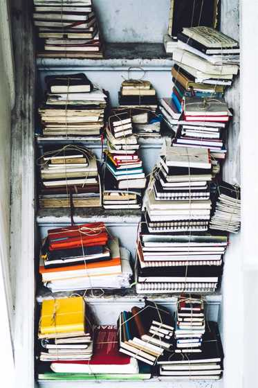
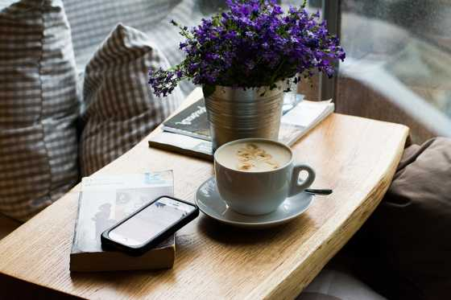
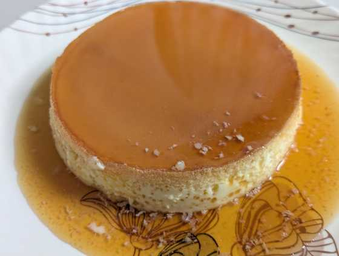
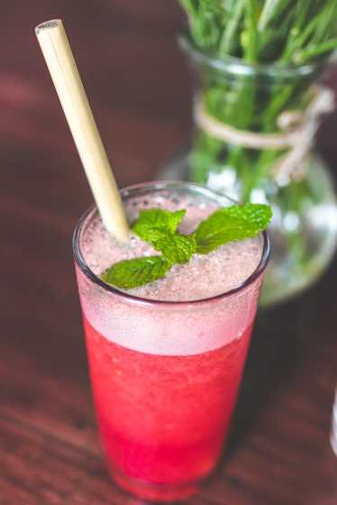
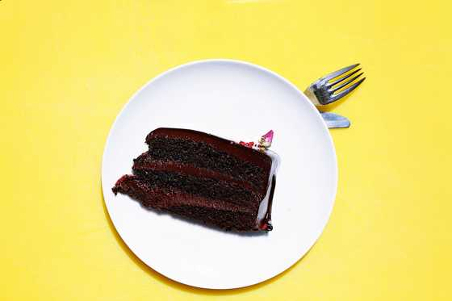
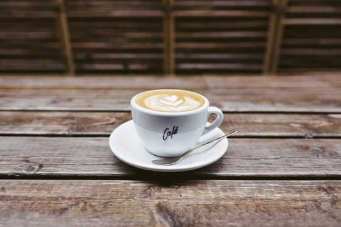
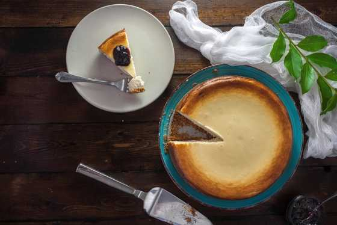
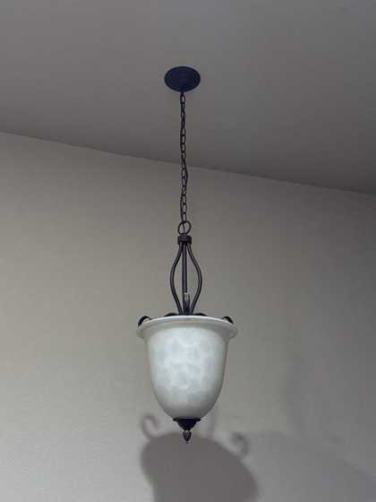

温泉津・元呉服屋の本と喫茶
本とプリンと昭和の空気で、
地元が誇れる居場所を。
まちライブラリーカフェpukapukaは、昭和の呉服屋だった建物で、本を借りながらゆっくり過ごせる喫茶店です。
お店の由来と想い
神楽がつないだ、温泉津の本と喫茶。
紹介記事によると、オーナーの森口さんは東京都の出身です。大学で舞台芸術を学ぶなかで石見神楽に出会い、温泉津とのご縁ができました。地元の人たちとイベントをつくるうちに「ここで暮らしたい」と思うようになったそうです。
地元の人が地元を低く見てしまうことに違和感があり、「地元の人たちが誇りを持てる場所をつくりたい」という気持ちからお店を開いた、と紹介されています。お店は2024年11月、温泉津駅から歩ける商店街のあたりにオープンしました。


建物は昭和の呉服屋だったもので、古き良さを残して改装されています。店内には店主が集めた昭和レトロな古道具や雑貨があり、一部は販売もされています。奥の廊下の先には中庭があり、金魚がいる手作りの池があるそうです。
「まちライブラリー」は、本を通じて人がつながる仕組みです。本を持ち寄り、自由に借りることができます。店内には1,000冊以上の本があると紹介されています。
情報源: 日刊Lazuda / 島根の暮らし / まちライブラリー / Instagram
店名「pukapuka」の意味は確認できていないため、ここでは触れていません。見出しの言い回しなどは制作側の表現です。
メニュー・過ごし方
固めのプリンと、昭和の喫茶の定番を。
紹介記事では、次のようなメニューや過ごし方が挙げられています。写真はフリー素材のイメージで、お店の実物ではありません。

昭和のぷりん
なめらかで固めの食感が特徴と紹介されています。価格: 準備中

クリームソーダ・ソーダ類
無添加のクリームソーダやレモンスカッシュなどが紹介されています。価格: 準備中

季節のケーキ
季節の素材を生かしたやさしい甘さのケーキと紹介されています。価格: 準備中

コーヒー・カフェラテ
コーヒーには地元の湧水が使われていると紹介されています。価格: 準備中




靴を脱いで上がれるソファ席、土足のまま使えるカウンター席があり、おもちゃもあるため子連れの方にも過ごしやすいと紹介されています。
営業時間・定休日は情報源によって異なるため、掲載せず「準備中」としています。最新情報はInstagramをご覧ください。
口コミ(イメージ例)
こんなお声が似合うお店です。
以下は制作側が作成したイメージ例で、実在のお客様の声ではありません。
本棚の前でプリンを食べながら、気づけば長居していました。ゆっくりできる場所です。
子どもが絵本に夢中になっている間に、のんびりコーヒーを飲めました。
昭和の雑貨を眺めているだけでも楽しい、懐かしい雰囲気のお店でした。
アクセス・ご案内
温泉津駅から歩いて行ける、商店街のなか。
| 所在地 | 〒699-2511 島根県大田市温泉津町小浜ロ59 |
|---|---|
| 電話 | 準備中 |
| 営業時間 | 準備中 |
| 定休日 | 準備中 |
| SNS | Instagram @pukapuka_yunotsu |